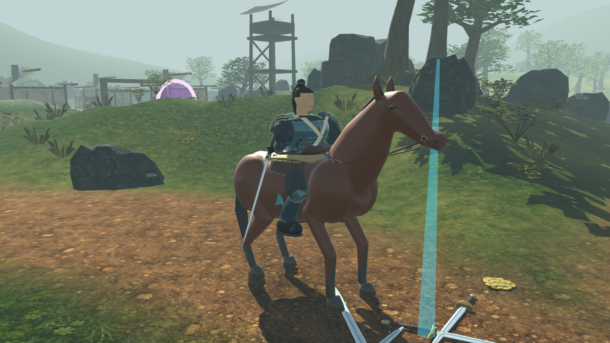
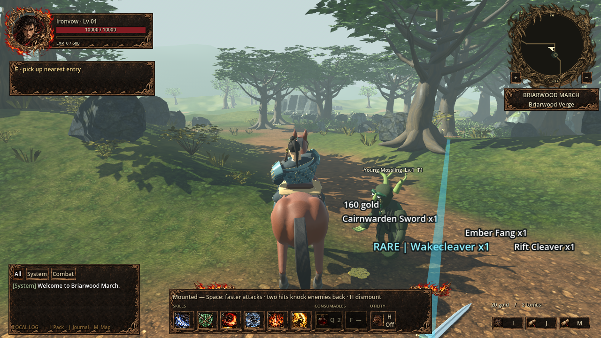

IRONFIELD · IN-GAME REVIEW
Rendered in the actual Briarwood scene. Select a close-up or inspect the two mounted cuts. The walkthrough and audio below were captured from Godot.


The 6.6-second capture moves through the asset views, horse travel, both real hits, conversation and region music transition. Enable its sound to hear the game mix.
NPC voices are synthetic recordings of the existing dialogue. All game playback is offline. Press F8 in the game to mute or unmute.
The mounted review measured 22° pelvis rotation, 91° chest rotation, less than 1 mm stirrup error and about 5 mm rein-hand error. See the implementation and asset notes or captured measurements.